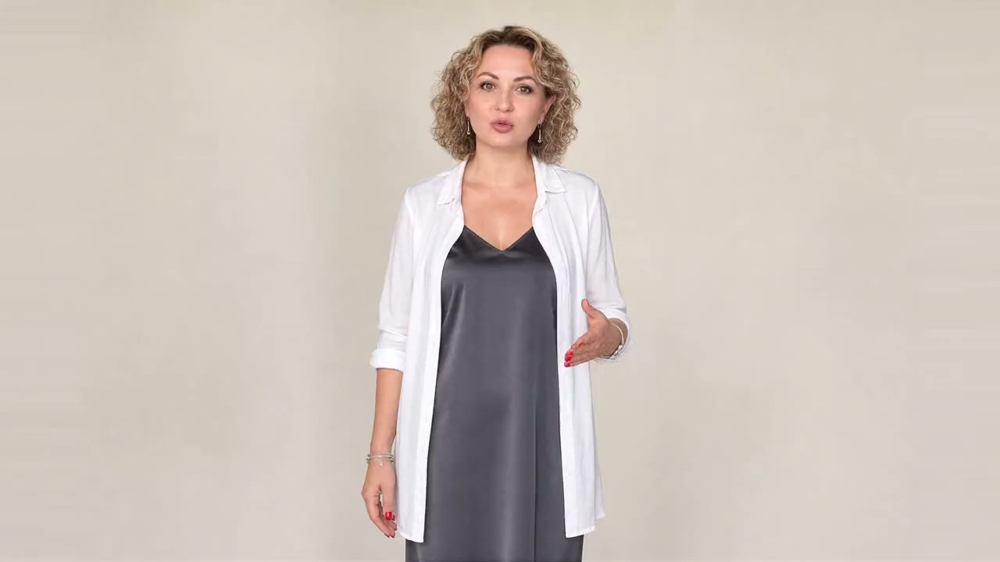

Видео нейросетями · с нуля
Из фотографии товара, из одной идеи, из собственного лица. И продавать этим: себя или свою работу
Ближайший старт — 1 октября · 12 недель
Образовательная лицензия № Л035-01261-30/01053865
Натэла Зубченко
продюсер онлайн-школы · тележурналист
